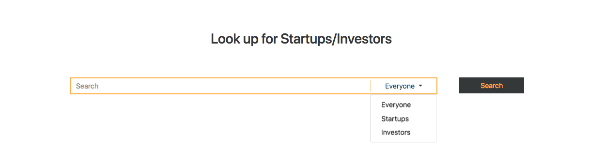

Black Knights
About the Project:
A freelance project that I did for Black Knights - a platform to collaborate Nigerian start-ups and investors.
Users:
There are two types of users,
Investors: ones who possess capital and are looking for
start-ups to
invest.
Start-ups: newly launched, small scale, local companies
searching for
funding.
Purpose of the product:
To develop a platform for Nigerian startups and investors to register and maintain profiles. The two entities can look up one another and collaborate.
My Role:
To design and develop a suitable interface for the interaction of the investors and the startups.
Tasks
Registration page
Firstly, I had to design a simple HTML form to onboard the users of the application. This had to be a responsive design that works well for all types of devices (mobiles, laptops, tablets) since the users received an email link to register themselves which could be opened on any device by the client. Below are the pros of this design:
- Clean and minimalistic UI
- Per field javascript validation so that the user doesn't have to wait till he clicks submit.
- Responsive design to work on laptops, mobiles and tablets.
Search page
My next task was to design a search bar to look up various investors and startups. Since a user could search for startups in particular or for investors alone, I had to provide them an option by which they could filter and limit their search to either of the two.

Profile page

I had to design a compact profile page for the startups and investors which portrayed all their details and made it look attractive to the opposite party.
- The right panel of the profile page is in the form of tabs to abstract the unnecessary/less important details. Since most users are interested in viewing the profile's overview, I've kept that as the active tab so that users can first look at the overview and if interested could know more by going through the other tabs.
- The left panel is static and is a quick access to the useful summary information about the profile. This is kept static so that the user can have access to concise details, readily available to compare, even if he navigates to another tab on the right panel.
- The categories in the right panel divided the overview information and made use of text as well as graphic icons and a few images to make the UI more visually appealing to the users. It was done so that it can gauge the user's interest and not turn them away by showing huge amounts of text information.
- I did put in a few progress bars in the left panel of the startups profile to show how much funding they've received and how much more they needed. This showed the investors whether funding the startup was in their capacity or not.
Learning
What I learned from this experience?
This was my first paid solo project where I learned that:
- A freelancers job is not an easy one.
- How to use Adobe Photoshop to make and export web designs.
- How to set targets & milestones and be dependable on oneself to achieve them.
- Designs need to be simple and unambiguous for users.
What I would have liked to achieve?
Since this was my first experience as a freelance designer/developer I did all I could to deliver a product, best in my capacity. Although there are a few things that I could have done better which are:
- Tag & location based search of startups: The search at present uses only name as a criteria. The startups were given tags in our backend which could be utilized for searching by the investors. This would give the investors more flexibility and a layer of filtering to search the startups they wish to invest in.
- Detailed search results page: The search result page just contains 3 things about a startup or an investor, that are: the profile picture name and title description. Each card could contain some more information, for example, How much funding is available through each investor? or How much funding is required by each startup? etc. This would make it easier for the users to just glance through the search results and view only the ones that could provide the required funding.